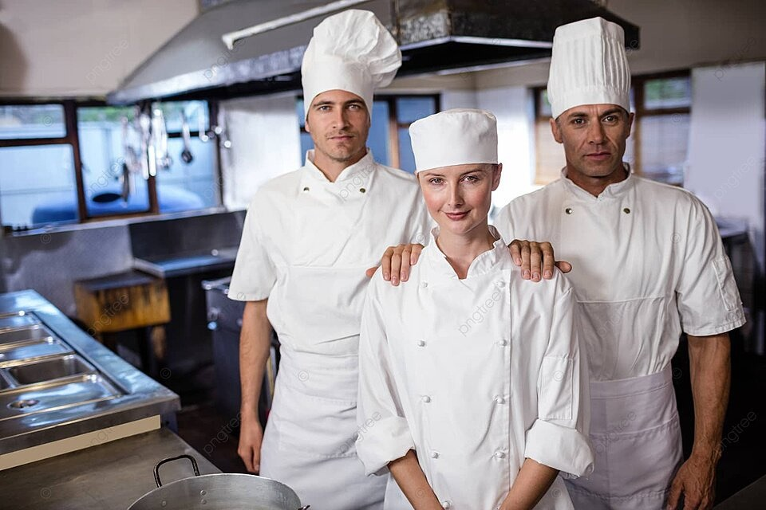

En Cogosfish, nos apasiona la innovación culinaria y la creación de experiencias gastronómicas únicas. A través de nuestros diversos proyectos, buscamos no solo deleitar a nuestros clientes con platos exquisitos, sino también promover prácticas sostenibles y responsables en la industria de los mariscos.
Nuestros menus de degustación llevan a los comensales en un viaje sensorial por los sabores del mar, hasta talleres culinarios y colaboraciones con chefs invitados, cada proyecto está diseñado para ofrecer una experiencia gastronómica inolvidable.
Además, nos comprometemos con la sostenibilidad y la pesca responsable, asegurando que nuestros métodos protejan los ecosistemas marinos y promuevan la conservación de los recursos naturales. En Cogosfish, cada proyecto es una oportunidad para innovar, educar y deleitar.
Menú Degustación del mar
Nuestro equipo de chefs ha creado un exclusivo menú degustación que lleva a los comensales en un viaje culinario a través de los sabores del mar. Cada plato está cuidadosamente elaborado para resaltar la frescura y la calidad de nuestros productos del mar, ofreciendo una experiencia gastronómica inolvidable.
Talleres Culinarios
Ofrecemos talleres culinarios donde los participantes pueden aprender a preparar platos de mariscos de la mano de nuestros expertos chefs. Estos talleres son perfectos para aquellos que desean mejorar sus habilidades culinarias y descubrir nuevos sabores.
Colaboraciones con Chefs Invitados
Invitamos a reconocidos chefs a colaborar con nuestro equipo en la creación de menús especiales y eventos exclusivos. Estas colaboraciones nos permiten ofrecer a nuestros clientes una experiencia culinaria diversa y enriquecedora.
Sostenibilidad y Pesca Responsable
Uno de nuestros proyectos más importantes es la implementación de prácticas de pesca sostenible. Estamos colaborando con organizaciones ambientales para asegurar que nuestros métodos de pesca no solo cumplan con las regulaciones, sino que también protejan los ecosistemas marinos. Este proyecto incluye la certificación de nuestros productos y la educación de nuestros proveedores sobre prácticas sostenibles.
Expansión
Estamos en proceso de expandir nuestra presencia. Este proyecto incluye la apertura de nuevas instalaciones en diferentes estados y la adaptación de nuestros productos a los gustos y preferencias locales. Nuestro objetivo es llevar la frescura y calidad de Cogosfish a un público nacional.